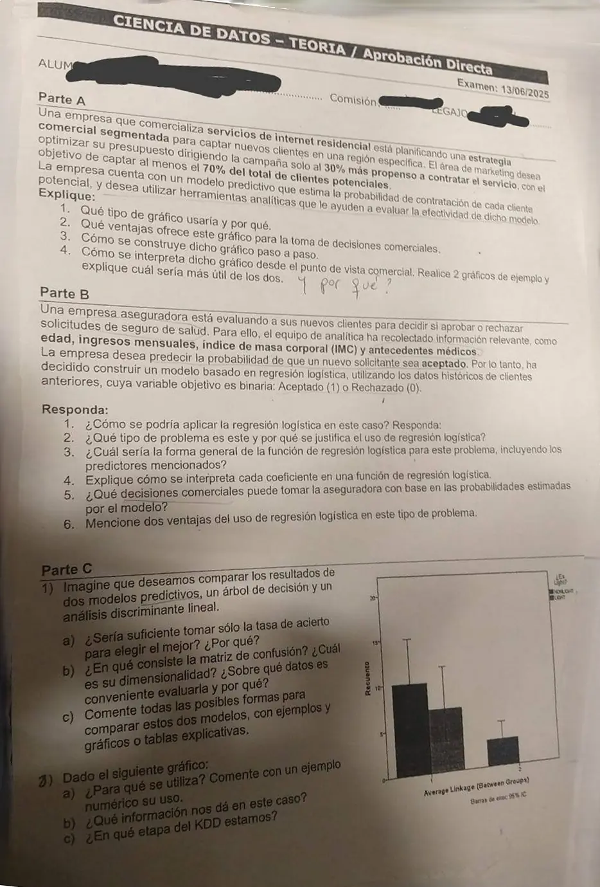

Parcial, teoría, 13/06/2025 (aprobación directa)
Parcial, 13/06/2025
Enunciado


Preguntas con opciones
Salen de este examen, adaptadas. Dejalas para el final, porque las opciones pueden dar pistas.
- 1
Si la variable predicha toma c valores, ¿de qué tamaño es la matriz de confusión?
Se tomó: Parcial 13/06/2025, adaptada
Es de c × c. Depende de las clases, no de las predictoras.
Propuesta de respuesta
Respuesta no verificada. La propuso Luta Studios con inteligencia artificial y ningún docente la revisó. Puede tener errores.
Parte A
1. Qué gráfico. Un gráfico de respuesta acumulada. El modelo estima la probabilidad de contratar de cada cliente, así que se los puede ordenar de más a menos propenso. Este gráfico dice qué porcentaje de las respuestas posibles se consigue según el porcentaje de clientes al que se le dirige la campaña. Es justo la pregunta de marketing, si dirigiéndose al 30 % más propenso se llega al 70 % de los clientes potenciales.
2. Ventajas.
- Se decide el tamaño de la campaña antes de gastar, leyendo el porcentaje de respuestas para cada porcentaje de envíos.
- Compara el modelo contra el azar, que es la diagonal, y muestra cuánto se gana por usarlo.
- Sirve para comparar dos modelos en el mismo gráfico.
- Con el costo de la campaña, el costo de cada envío y el beneficio por venta, se calcula el beneficio para cada cantidad de envíos y se elige la que más deja.
3. Cómo se construye. Con los clientes de la región y la probabilidad que da el modelo para cada uno:
- Se ordenan los clientes por su probabilidad de mayor a menor.
- Se hace una suma acumulativa.
- Se divide cada valor por la suma total de probabilidades.
- Se multiplica por 100.
En el eje va el porcentaje de clientes a los que se les dirige la campaña. En el eje , el porcentaje de los que contratarían sobre el total. Se agrega la diagonal del azar, donde el 30 % de los envíos da el 30 % de las respuestas.
4. Cómo se interpreta, con dos ejemplos. Se mira en . El modelo cumple el objetivo si su curva pasa por 70 o más.
Es más útil el modelo A. Con el mismo presupuesto, el 30 % de los envíos, capta el 70 % de los clientes potenciales. El B capta el 51 %, y para llegar al 70 % habría que contactar a más gente (cerca del 45 %). Cuanto más se aleja la curva de la diagonal al principio, mejor ordena el modelo a los clientes.
Parte B
1. Cómo se aplica. Con los datos de los clientes anteriores (edad, ingresos mensuales, IMC, antecedentes médicos) y su resultado conocido, aceptado o rechazado, se estiman los coeficientes. Los antecedentes son categóricos y hay que numerizarlos, por ejemplo con una variable que vale 1 si tiene antecedentes y 0 si no. Después, para cada solicitante nuevo, el modelo da la probabilidad de que sea aceptado.
2. Tipo de problema. Es un problema predictivo de clasificación con dos clases. Lo que se quiere es una probabilidad para una variable categórica, eso que el libro llama clasificación suave. Se justifica la logística porque una probabilidad no puede pasarse de 1 ni bajar de 0, y una recta sí. La logística modela el logit, que puede crecer sin límite, y la probabilidad queda siempre entre 0 y 1.
3. Forma general.
es la probabilidad de que la solicitud sea aceptada ().
4. Cómo se interpreta cada coeficiente.
- Si aumenta una unidad, el logit aumenta , con las demás fijas.
- es el odds ratio. Dice por cuánto se multiplica la razón por cada unidad que aumenta . Si es mayor que 1, aumenta la chance de ser aceptado. Si es menor que 1, la baja.
- Un odds ratio igual a 1 equivale a , la variable no influye. Si su intervalo de confianza contiene al 1, la variable no es significativa.
Por ejemplo, si saliera para el IMC, el odds ratio es . Cada punto más de IMC multiplica la razón entre aceptar y rechazar por 0,905, o sea la baja cerca de un 9,5 %. Con antecedentes, que vale 0 o 1, compara directamente a quien tiene antecedentes con quien no.
5. Decisiones comerciales.
- Aprobar sin más trámite las solicitudes con probabilidad alta y rechazar las de probabilidad muy baja.
- Mandar a revisión manual las que quedan en el medio.
- Ordenar las solicitudes por probabilidad para atender primero las más probables.
- Elegir el umbral según lo que cueste cada error, aprobar a quien no debía o rechazar a un buen cliente.
6. Dos ventajas.
- Da una probabilidad y no solo una clase, así que permite fijar umbrales y ordenar.
- Los coeficientes se interpretan, con el odds ratio y la significación de cada uno. Se le puede explicar al negocio qué variable pesa y cuánto.
Parte C
1a) ¿Alcanza la tasa de acierto? No.
- Una tasa global alta puede esconder una clase mal clasificada. En un ejemplo de los apuntes, un árbol acierta el 77,22 % y de 44 casos de una clase acierta 8.
- Con clases desbalanceadas engaña. Si el 99 % es de una clase, decir siempre esa clase da 99 %.
- No todos los errores cuestan lo mismo, y un modelo con menos acierto puede costar menos.
- Tiene que medirse con datos de prueba. Medida con los de entrenamiento no detecta el sobreajuste.
1b) La matriz de confusión. Informa cómo distribuye los errores un clasificador. Cada celda cuenta, para cada clase real, los casos a los que se les predijo cada clase. En la diagonal están los aciertos y fuera de ella, los errores. Para clases es de , y con dos clases, de 2 por 2. Conviene evaluarla con datos de prueba, independientes de los de entrenamiento, porque con estos el resultado es optimista y no muestra cómo predice casos que nunca vio. Si hay pocos datos, con validación cruzada.
1c) Formas de comparar los dos modelos. Todo sobre los mismos datos de prueba.
| Forma | Qué mira |
|---|---|
| Tasa de acierto o de error | El resultado global |
| Matriz de confusión | El acierto en cada clase |
| Matriz de costos | Cuánto cuesta cada error |
| Validación cruzada | Un error que no depende de una sola partición |
| Gráfico de evaluación o de respuesta acumulada | Cuál se aleja más del azar |
| ROC y AUC | Cuál se comporta mejor sin conocer los costos |
| Prueba t | Si la diferencia de error es significativa |
| Simplicidad | Entre dos buenos, el más fácil de explicar y poner en producción |
Un ejemplo inventado con 200 casos de prueba, 50 positivos y 150 negativos.
| Árbol | Discriminante | |
|---|---|---|
| , | 40, 10 | 30, 20 |
| , | 30, 120 | 10, 140 |
| Acierto | ||
| 0,8 | 0,6 | |
| 0,2 | 0,067 | |
| Costo con y |
Por acierto gana el discriminante. Si un positivo no detectado cuesta cinco veces más que una falsa alarma, gana el árbol. En el espacio ROC ninguno domina al otro, porque el árbol detecta más pero también da más falsas alarmas. Si además los dos rinden parecido, el árbol es más fácil de explicar.
2a) Para qué se usa el gráfico. Es un gráfico de barras agrupadas con el recuento de cada categoría de una variable cualitativa, «¿Es Light?», en cada cluster de un cluster jerárquico con enlace promedio (average linkage), con barras de error al 95 %. Sirve para describir los grupos que formó el cluster. Se mira si un cluster representa a alguna categoría, si alguna queda excluida, y si los intervalos se solapan, porque en ese caso la variable no da información.
Un ejemplo numérico del enlace promedio, la distancia que usó este cluster. Con los grupos y sobre una variable, los pares posibles dan 4, 6, 3 y 5.
Con enlace simple daría 3, el par más cercano, y con enlace completo 6, el más lejano.
Un ejemplo numérico de la lectura. Si en un cluster una categoría tiene 10 casos con intervalo de 6 a 15 y la otra 8 con intervalo de 4 a 12, los intervalos se solapan y la variable no distingue a ese cluster.
2b) Qué dice en este caso. Leído del gráfico, más o menos:
- En el cluster 1 están las dos categorías, una con unos 10 casos y otra con unos 8, y los intervalos se solapan. La variable «¿Es Light?» no caracteriza a ese cluster.
- En el cluster 2 aparece una sola categoría, con unos 4 o 5 casos. La otra queda excluida, así que el cluster 2 queda definido por esa categoría.
Para saber si la división sirve, hay que hacer lo mismo con las otras variables y preguntarse si el perfil de cada grupo le sirve al negocio.
2c) Etapa del KDD. La 4, evaluación e interpretación. El modelo ya está construido (eso es la fase 3, minería) y el gráfico sirve para interpretar los grupos y decidir si sirven.
Respuesta no verificada. Puede tener errores.
Se armó con Parcial, secciones Gráfico de respuesta acumulada, Regresión logística, Evaluar un modelo (matriz de confusión, costos, ROC y Comparar dos modelos), Análisis de conglomerados y El proceso KDD.
Quedó en duda: El material no dice qué gráfico esperaba la cátedra en la parte A. Elegí el de respuesta acumulada del libro, y los apuntes de alumno lo cuentan como nodo evaluación. Las dos curvas de ejemplo, el coeficiente del IMC y los números de la comparación son inventados. Regresión logística sale solo del libro. En el gráfico de cluster leí los recuentos a ojo. En el cluster 2 hay una sola barra, que por el color parece de la categoría Light, aunque en la foto no se distingue bien. La etapa del KDD la puse en la 4, y se podría discutir la 3.
¿Cómo te fue?
Marcá cada tema del examen. Las preguntas con opciones ya se corrigieron solas.
- Evaluación de modelosEvaluar un modelo, en Parcial
- Regresión logísticaRegresión logística, en Parcial
- Matriz de confusiónLa matriz de confusión, en Parcial
- ClustersCluster jerárquico, en Parcial
- KDDEl proceso KDD, en Parcial